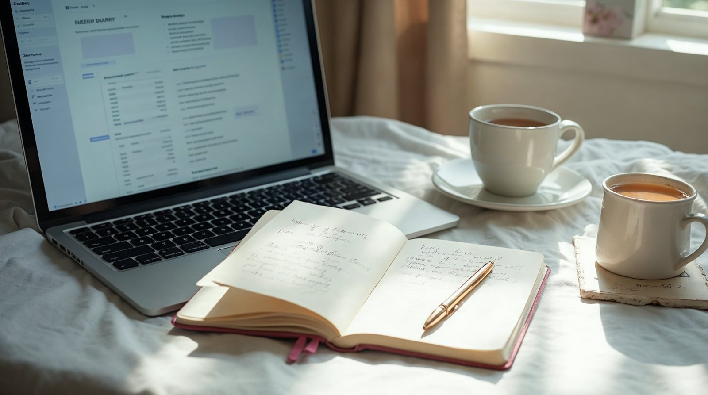

이종호 한의사 감수좋은꿈참사랑한의원 대표원장 (한의사 면허번호 19769)발행 2026-11-26 · 수정 2026-11-26
이 글의 차례
오후 회의 자료를 넘기는데 글자가 흐려지고 고개가 툭 떨어집니다. 어젯밤 일곱 시간 넘게 잤는데도 그렇습니다. 커피를 두 잔 더 마셔도 소용이 없고, 버스에서는 내릴 정류장을 지나치기 일쑤입니다. 주변에서는 "요즘 많이 피곤한가 봐" 하고 웃지만, 본인은 웃을 수가 없습니다.
진료실에서 이런 말씀을 들을 때가 있습니다. "게을러 보일까 봐 말도 못 하겠어요." "의지가 약해서 그런 것 같아요." 저는 그 말이 가장 마음에 걸립니다. 견디기 힘든 낮 졸음은 의지의 문제가 아닌 경우가 많기 때문입니다.
밤에 잠을 충분히 잤는데도 낮에 졸음을 참기 어렵고, 그런 날이 몇 달 이어진다면 과다수면이라고 부릅니다. 그 뒤에는 수면무호흡처럼 밤잠의 질이 떨어지는 문제가 있을 수도, 기면증처럼 잠과 깸을 조절하는 뇌의 장치에 문제가 있을 수도 있습니다.
그래서 이 글의 첫 문장은 이것입니다. 낮 졸음이 오래가면 수면 검사를 먼저 받아 보세요. 한의원은 그 확인과 함께, 혹은 그 뒤에 생활과 몸을 살피는 자리에 서 있으려 합니다.
왜 충분히 자도 낮에 졸릴까요
잠은 길이만큼 질이 중요합니다. 일곱 시간을 누워 있어도 그 사이 수십 번 얕게 깼다면 몸은 제대로 쉬지 못한 셈입니다. 본인은 깬 줄도 모르는 짧은 깸이 밤새 이어지면, 아침엔 잔 것 같지 않고 낮에는 졸음이 몰려옵니다.
이런 일을 가장 흔하게 만드는 것이 수면무호흡입니다. 잠들면 목 안쪽이 좁아져 숨이 막혔다가 다시 터지기를 반복합니다. 코골이가 크고 중간에 조용해졌다가 '컥' 하고 숨을 몰아쉰다는 말을 들었다면 의심해 볼 수 있습니다.
기면증은 조금 다릅니다. 잠과 깸을 나누는 뇌의 스위치가 흔들려, 깨어 있어야 할 때 잠이 밀고 들어옵니다. 밥을 먹다가, 대화를 하다가도 잠깐 잠에 빠지고, 짧게 자고 나면 한동안 개운한 것이 특징으로 알려져 있습니다.
그 밖에도 다리가 불편해 자꾸 깨는 하지불안, 교대 근무로 흐트러진 생체 리듬, 갑상선 기능 저하, 빈혈, 우울감, 일부 약의 영향이 낮 졸음을 만들 수 있습니다. 원인이 이렇게 여러 갈래라서 '졸린 것'만으로는 답을 정하기 어렵습니다.
약도 자주 놓치는 원인입니다. 콧물·알레르기약 일부, 근육 이완제, 진통제, 안정제, 일부 혈압약은 졸음을 부를 수 있습니다. 새 약을 시작한 시기와 졸음이 심해진 시기가 겹친다면 처방한 의사나 약사에게 꼭 여쭤 보세요. 약을 스스로 끊기보다 상의해서 조정하는 것이 안전합니다.
피곤함, 졸림, 과다수면은 어떻게 다를까요
피곤함과 졸림은 자주 섞어 쓰지만 다른 말입니다. 피곤하다는 것은 몸과 마음이 지쳐 기운이 없는 느낌이고, 누워도 잠이 오지 않을 수 있습니다. 졸리다는 것은 눈꺼풀이 감기고 실제로 잠에 빠질 것 같은 느낌입니다.
진료실에서 "늘 피곤해요"라고 하시는 분께 저는 "앉아 있으면 실제로 잠이 드시나요?"를 꼭 여쭙니다. 기운이 없을 뿐 잠이 들지 않는다면 만성 피로나 우울감 쪽을, 앉기만 하면 잠이 든다면 수면 질환 쪽을 더 살펴야 하기 때문입니다.
식사 뒤 잠깐 졸리거나, 오후 두세 시쯤 한 번 졸음이 오는 것은 많은 사람에게 있는 일입니다. 과다수면은 이보다 훨씬 강하고 잦습니다. 중요한 시험이나 회의 중에도 참기 어렵고, 운전처럼 위험한 순간에도 졸음이 찾아옵니다.
전날 잠이 짧았다면 다음 날 졸린 것은 당연합니다. 그래서 먼저 확인하는 것이 '밤잠이 정말 충분했는가'입니다. 평일엔 다섯 시간, 주말엔 열 시간을 자는 분이라면 과다수면보다 잠 빚이 먼저 보입니다.
예를 들면 이런 모습입니다
실제 어느 분의 사연이 아니라, 진료실에서 자주 보는 모습을 바탕으로 그려 본 장면입니다.
예를 들어 몇 해 사이 체중이 늘고 코골이가 심해진 직장인이라면, 아침마다 입이 마르고 머리가 무겁다고 말씀하시곤 합니다. 낮에는 모니터 앞에서 졸음과 싸웁니다. 이런 모습이라면 저는 수면무호흡 검사를 먼저 권해 드립니다.
학생 때부터 수업 중에 자꾸 잠들어 혼났다는 분도 계십니다. 잠깐 엎드려 자고 나면 한동안 또렷한데, 몇 시간 뒤 다시 졸음이 밀려옵니다. 크게 웃을 때 다리에 힘이 풀린 적이 있다면 기면증 검사를 받아 볼 이유가 더 커집니다.
밤 근무와 낮 근무가 번갈아 돌아가는 분이라면 몸이 지금이 낮인지 밤인지 헷갈려 합니다. 이때는 졸음을 없애기보다 근무표에 맞춰 잠자는 시각과 빛을 보는 시각을 함께 짜는 것이 먼저입니다.
나이가 들며 낮에 꾸벅꾸벅 조는 날이 늘었다는 어르신도 많습니다. 밤잠이 짧아지고 새벽에 일찍 깨면서 낮에 그 빚을 갚는 경우가 흔합니다. 다만 드시는 약이 늘어난 시기와 졸음이 겹친다면 처방한 의사와 약을 함께 점검해 보시길 권합니다.
스스로 살펴보는 질문
아래는 진단표가 아니라, 내 졸음을 말로 옮기는 데 쓰는 질문입니다. '예'가 많을수록 수면 검사를 받아 보시길 권합니다.
- 밤에 일곱 시간 넘게 자도 낮에 졸음을 참기 어렵다
- 책을 읽거나 TV를 보면 몇 분 안에 잠이 든다
- 운전 중이나 신호 대기 중에 졸았던 적이 있다
- 코골이가 크고, 자다가 숨이 멎는다는 말을 들었다
- 크게 웃거나 놀랄 때 무릎이나 얼굴에 힘이 빠지는 느낌이 있다
- 잠들 무렵이나 깰 무렵 몸이 안 움직이는 가위눌림이 잦다
마지막 두 질문은 기면증에서 함께 나타날 수 있는 모습으로 알려져 있습니다. 해당된다면 꼭 진료 때 말씀해 주세요. 본인은 대수롭지 않게 여기던 일이 중요한 단서가 되기도 합니다.
수면 검사는 이런 순서로 이루어집니다
수면 검사라는 말에 겁을 먹는 분이 많습니다. 실제로는 병원에서 하룻밤 자는 것에 가깝습니다. 머리, 얼굴, 가슴, 다리에 작은 센서를 붙이고 잠든 동안의 뇌파, 숨, 산소, 심장 박동, 다리 움직임을 기록합니다.
이 검사를 흔히 수면다원검사라고 부릅니다. 밤사이 숨이 몇 번 멈췄는지, 잠이 몇 번 깨졌는지, 깊은 잠이 얼마나 있었는지를 볼 수 있습니다. 수면무호흡이 의심될 때 가장 먼저 떠올리는 검사입니다.
기면증이 의심되면 다음 날 낮에 몇 차례 짧게 누워 얼마나 빨리 잠드는지를 보는 검사를 함께 하기도 합니다. 어떤 검사를 언제 할지는 수면 클리닉에서 정합니다. 검사 전에 드시는 약을 미리 알려 두시면 좋습니다.
졸음은 하루를 이렇게 바꿉니다
낮 졸음은 졸린 것으로 끝나지 않습니다. 집중이 끊기니 같은 일을 두 번 하게 되고, 실수가 늘어 마음이 위축됩니다. 오후가 되면 짜증이 늘고, 저녁에는 아무것도 하기 싫어 소파에 눕게 됩니다. 그렇게 하루가 조금씩 좁아집니다.
그래서 저는 졸음의 크기만큼 졸음 때문에 놓친 것을 여쭙습니다. 좋아하던 운동을 그만두셨는지, 약속을 피하게 되셨는지 같은 것들입니다. 그 대답이 생활 계획을 세울 때 무엇부터 되찾을지 정하는 기준이 됩니다.
먼저 이렇게 여쭙니다
졸음은 하루의 흐름 속에서 봐야 보입니다. 처음 오시면 이런 것들을 여쭙니다.
- 평일·주말 각각 눕는 시각, 잠드는 시각, 일어나는 시각
- 낮에 졸음이 오는 시각과 그때 하고 있던 일
- 코골이, 숨 멈춤, 자다가 숨이 막혀 깬 적이 있는지
- 낮잠을 자고 나면 개운한지, 더 무거운지
- 드시는 약(수면제, 알레르기약, 진통제, 안정제 등)과 술의 양
- 교대 근무나 야간 일을 하는지
함께 사는 분이 있다면 밤에 어떤 모습인지 물어 와 주시면 큰 도움이 됩니다. 코골이와 숨 멈춤은 본인보다 옆 사람이 더 잘 압니다. 휴대폰으로 잠든 모습의 소리를 녹음해 오시는 분도 있습니다.
일상에서 먼저 해 볼 수 있는 것
수면 검사를 기다리는 동안이나 검사 결과 큰 이상이 없다는 말을 들은 뒤라면, 생활에서 해 볼 수 있는 것이 있습니다.
- 평일과 주말의 기상 시각 차이를 한 시간 안으로 줄입니다
- 아침에 일어나면 바로 커튼을 열고 10분 정도 햇빛을 봅니다
- 낮잠이 필요하면 오후 세 시 전, 20분 안쪽으로 짧게 잡니다
- 저녁 술은 줄입니다. 술은 잠을 빨리 들게 해도 밤잠을 얕게 만들기 쉽습니다
기면증이 확인된 분께는 하루 중 짧은 낮잠을 계획해서 넣는 방법을 병원에서 함께 권하기도 합니다. 졸음을 억지로 참기보다 정해진 시각에 짧게 자는 쪽이 낮을 버티는 데 도움이 될 수 있습니다.
점심은 양을 조금 줄이고 천천히 드셔 보세요. 기름진 음식과 단 음식을 한꺼번에 많이 먹으면 식후 졸음이 더 무겁게 오는 분이 많습니다. 식사 뒤 10분 정도 걷는 것도 함께 해 보시면 좋습니다.
체중이 늘면서 코골이가 심해졌다면 체중 관리가 밤 숨길에도 영향을 줍니다. 옆으로 누워 자기, 자기 전 술 피하기도 수면무호흡이 의심될 때 흔히 권하는 생활 방법입니다. 다만 이것으로 검사를 대신하지는 않습니다.
졸음이 올 때 잠깐 일어나 창가에 서거나, 찬물로 손을 씻거나, 계단을 한 층 오르내리는 것도 작은 도움이 됩니다. 다만 이런 방법은 순간을 넘기는 요령일 뿐입니다. 요령으로 버티는 날이 길어질수록 원인 확인은 미루지 않으셨으면 합니다.
중요한 일정이 있는 날에는 전날 밤 잠을 지키는 것이 가장 든든한 준비입니다. 늦게까지 일을 붙잡기보다 평소 시각에 눕고, 다음 날 오전에 일을 마무리하는 쪽을 권합니다.
한의원에서 함께 살필 수 있는 경우
낮 졸음은 원인 확인이 먼저입니다. 그 위에서 한의원이 함께 살필 수 있는 경우는 이렇습니다.
- 수면 검사에서 큰 이상은 없다는데 몸이 무겁고 늘 졸린 경우
- 수면무호흡 치료(양압기 등)를 받으면서 잠과 소화, 몸 상태를 함께 살피고 싶은 경우
- 식사 뒤 졸음이 유난히 심하고 몸이 붓고 무거운 경우
- 교대 근무로 잠 리듬이 흐트러져 생활 계획을 함께 세우고 싶은 경우
좋은꿈참사랑한의원에 처음 오시면 먼저 아래 위험 신호와 운전 중 졸음이 있는지 여쭙니다. 해당되면 수면 검사가 가능한 병원을 먼저 권해 드리고 그 이유를 설명합니다.
그다음 밤과 낮의 흐름을 듣고 양손을 올려 달라고 말씀드립니다. 저는 처음 오신 분이든 다시 오신 분이든 모든 분께 맥을 짚습니다. 맥과 혀, 붓기, 배의 상태를 보며 몸이 무거운 쪽인지 기운이 처진 쪽인지를 살핍니다.
이렇게 살핀 내용을 바탕으로 생활 리듬 약속과 침, 한약 상담처럼 함께 할 수 있는 것을 정합니다. 결과를 미리 약속드리기보다 다음 진료에서 낮 졸음의 시각과 강도가 어땠는지 함께 보며 조정합니다.

이렇게 기록해 오시면 상담이 쉬워집니다
졸음은 기억에 잘 남지 않습니다. 졸았던 순간은 대개 흐릿하기 때문입니다. 2주만 짧게 적어 와 주세요.
- 눕는 시각, 대략 잠든 시각, 일어난 시각
- 밤에 깬 횟수와 아침 개운함(0~10)
- 낮에 졸았던 시각, 장소, 그때 하던 일
- 낮잠 시각과 길이, 자고 난 뒤 느낌
- 커피·술의 양, 먹은 약
수면 검사를 받으셨다면 결과지를 함께 가져와 주세요. 숫자가 무엇을 뜻하는지, 지금 어떤 치료를 받고 있는지 알면 한의원에서 함께 할 수 있는 일을 더 정확히 정할 수 있습니다.
낮마다 졸음과 싸우는 일은 생각보다 많은 힘을 씁니다. 그동안 게으르다는 오해까지 함께 견뎌 오셨을지도 모르겠습니다. 다음에 오시면 2주 동안 적어 오신 졸음의 시각부터 함께 짚어 보겠습니다.
이런 증상은 먼저 확인이 필요합니다
- 운전 중이나 기계를 다루는 중에 졸음을 참기 어려운 경우
- 자다가 숨이 멎는다는 말을 듣거나, 웃을 때 갑자기 몸에 힘이 빠지는 경우
이런 신호가 있으면 한의원보다 가까운 병원이나 응급실을 먼저 찾으세요.
함께 읽으면 좋은 글
- 코를 크게 골고 자다가 숨이 멎는 것 같을 때는 어떻게 하나요?
- 피곤한 것과 졸린 것은 어떻게 구분해서 말하면 좋을까요?
- 충분히 쉬어도 몸이 늘 피곤한 만성피로는 어떤 점을 살펴보나요?
- 공부하다 오후에 졸음이 몰려올 때는 어떻게 살펴보나요?
여쭙는 것
- 평일·주말 각각 눕는 시각, 잠드는 시각, 일어나는 시각
- 낮에 졸음이 오는 시각과 그때 하고 있던 일
- 코골이, 숨 멈춤, 자다가 숨이 막혀 깬 적이 있는지
생활에서 해 볼 것
- 평일과 주말의 기상 시각 차이를 한 시간 안으로 줄입니다
- 아침에 일어나면 바로 커튼을 열고 10분 정도 햇빛을 봅니다
- 낮잠이 필요하면 오후 세 시 전, 20분 안쪽으로 짧게 잡니다
한의원에서 함께 살필 것
- 수면 검사에서 큰 이상은 없다는데 몸이 무겁고 늘 졸린 경우
- 수면무호흡 치료(양압기 등)를 받으면서 잠과 소화, 몸 상태를 함께 살피고 싶은 경우
- 식사 뒤 졸음이 유난히 심하고 몸이 붓고 무거운 경우
먼저 확인이 필요한 신호
- 운전 중이나 기계를 다루는 중에 졸음을 참기 어려운 경우
- 자다가 숨이 멎는다는 말을 듣거나, 웃을 때 갑자기 몸에 힘이 빠지는 경우
한눈에 보는 표
| 구분 | 핵심 |
|---|---|
| 여쭙는 것 | 평일·주말 각각 눕는 시각, 잠드는 시각, 일어나는 시각 낮에 졸음이 오는 시각과 그때 하고 있던 일 |
| 생활에서 해 볼 것 | 평일과 주말의 기상 시각 차이를 한 시간 안으로 줄입니다 아침에 일어나면 바로 커튼을 열고 10분 정도 햇빛을 봅니다 |
| 한의원에서 함께 살필 것 | 수면 검사에서 큰 이상은 없다는데 몸이 무겁고 늘 졸린 경우 수면무호흡 치료(양압기 등)를 받으면서 잠과 소화, 몸 상태를 함께 살피고 싶은 경우 |
| 먼저 확인이 필요한 신호 | 운전 중이나 기계를 다루는 중에 졸음을 참기 어려운 경우 자다가 숨이 멎는다는 말을 듣거나, 웃을 때 갑자기 몸에 힘이 빠지는 경우 |
자주 묻는 질문
커피를 많이 마시면 낮 졸음을 버틸 수 있지 않나요?
잠깐은 버틸 수 있어도 원인을 가리는 경우가 많습니다. 오후 커피는 밤잠을 얕게 만들어 다음 날 졸음을 더 키우기도 합니다. 졸음이 몇 달째라면 커피를 늘리기보다 원인 확인을 먼저 권합니다.
기면증은 어디서 검사하나요?
수면 검사가 가능한 신경과, 정신건강의학과, 이비인후과 등의 수면 클리닉에서 확인합니다. 밤 수면 검사와 낮 동안의 졸음 검사를 함께 하는 경우가 많습니다. 방문 전 검사 가능 여부를 전화로 확인해 보세요.
수면 검사에서 이상이 없다는데 계속 졸려요.
검사에서 큰 이상이 없어도 잠 리듬, 식사, 몸의 무거움, 기분 등 살필 것이 남아 있습니다. 검사 결과지와 2주 수면 기록을 가져오시면 맥과 함께 생활 쪽을 살펴봅니다.
주말에 몰아서 자면 괜찮아지지 않나요?
주말에 길게 자면 그날은 편해도 월요일 아침이 더 힘들어지기 쉽습니다. 평일과 주말의 기상 시각 차이를 한 시간 안으로 맞추는 쪽이 낮 졸음을 살피는 데 도움이 됩니다.
양압기를 쓰고 있는데 한의원 진료를 함께 받아도 되나요?
함께 받으셔도 됩니다. 양압기는 처방한 병원의 안내대로 계속 쓰시고, 한의원에서는 잠과 소화, 몸의 무거움 같은 생활 쪽을 함께 살핍니다.
낮잠을 아예 안 자는 게 좋은가요?
사람마다 다릅니다. 밤잠이 짧아지지 않는다면 오후 세 시 전 20분 안쪽의 짧은 낮잠은 괜찮은 경우가 많습니다. 낮잠이 길어지고 밤에 잠이 늦어진다면 낮잠 시각과 길이부터 줄여 보세요.
좋은꿈참사랑한의원은 재진 때 지난번 이야기부터 이어서 여쭙니다. 진료시간과 예약은 오시는 길에서 확인하세요.
어디서 상담받을 수 있나요?
좋은꿈참사랑한의원은 서울 동작구 만양로2길 2 신성빌딩 3층·5층(서울 동작구 상도동, 7호선 상도역 3번 출구 근처)에 있습니다. 한의사 3명(이종호 대표원장, 조영기 수석진료원장, 정원영 진료원장)이 진료합니다. 진료시간은 평일 09:30~20:00(점심 13:00~14:00), 토·일·공휴일 09:30~15:00이며, 방문 전 전화로 확인을 권합니다. 예약은 네이버 예약, 카카오톡 상담, 전화 02-815-7510로 받습니다.
이 글은 일반적인 건강 정보이며 개인의 진단이나 치료를 대신하지 않습니다. 증상이 있거나 복용 중인 약이 있다면 진료를 통해 확인하세요. 치료 효과는 개인마다 다를 수 있습니다.
작성 기준: 일반적으로 알려져 있는 건강 정보를 참고해 정리했습니다(대표원장 감수). 증상 기록은 1~2주 동안 하루 1회, 비슷한 시간에 적어 오시면 지난 상태와 비교하기 쉽습니다.